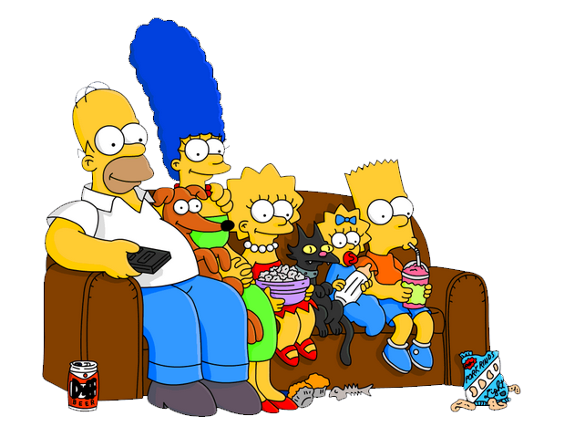
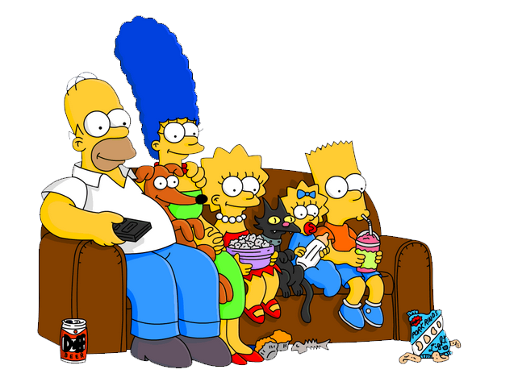

The Simpsons é uma série de animação e sitcom norte-americana criada por Matt Groening em 17 de dezembro de 1989 para a Fox Broadcasting Company. A série é uma paródia satírica do estilo de vida da classe média dos Estados Unidos e aspectos da condição humana, Atualmente conta com 762 episodios e 35 temporadas.